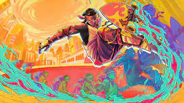
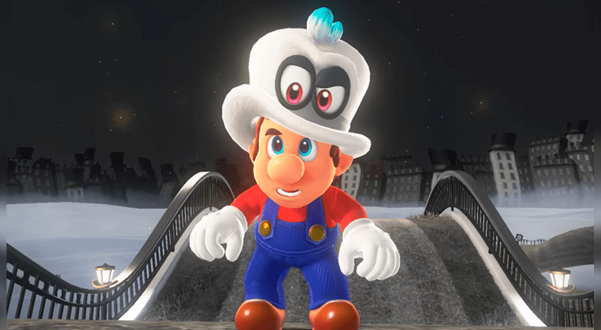

Estos juegos me gustaron al momento de ir de viaje🎮🕹️
Fifa 23⚽

El fifa 23 esta muy cool como para ir en carro o en avion y no aburrirse y dejar al messi 7-0 y que sabemos que compro el mundialpor eliminar, no lo niegues sabes que lo compro. Y en mi humilde opinion🧐 Le doy un 1000000000000/10, si lo has jugado sabes que tengo razon y 🧐🏳️🌈 el que diga lo contrario
Fortnite🔫

Fortnite me gusta por como hace un battle royal con toda una historia y sea algo mejor que un simple juego de disparos como el free fire que ni se por que lo juega mucha gente. Y en mi humilde opinion🧐 es god pero a otro nivel Posdata:aprovechen el martillo para mandar a los jugadores donde callosama por que nada es eterno nisiquiera el god martillo😢
Mario Odysey🧢🔴👨🏻🔧
